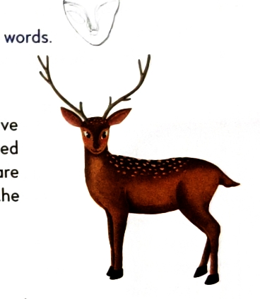

Why Homophones Cause Illogical Sentences:
Because they sound identical in speech, writers frequently confuse them in writing, creating absurd mistakes:
Textbook Master List (Spotlight Grammar Pgs 149–150)
| Homophone Pair | Definitions & Part of Speech | Authentic Textbook Sentence Examples |
|---|---|---|
| advice advise |
advice: (noun) An idea/opinion given to help someone decide advise: (verb) To give counsel or advice to |
• He did not listen to his father's advice. • My mother advised me to work hard. |
| bear bare |
bear: (noun) A large heavy furry animal (or verb: tolerate) bare: (adj) Uncovered, naked, or exposed |
• I saw a bear in the zoo. • Do not walk on hot sand in bare feet. |
| cite site |
cite: (verb) To quote an authority or passage site: (noun) A specific location or plot of ground |
• Pramod cited many historical examples. • This is the proposed site for our new house. |
| complement compliment |
complement: (verb/noun) Adding to enhance or complete compliment: (noun/verb) Expression of praise or respect |
• The dishes on the menu complement each other. • Everyone complimented him on his achievement. |
| check cheque |
check: (verb) To examine, inspect, or verify cheque: (noun) A written bank order to pay money |
• Always check your calculations carefully. • He gave me a cheque for ₹10,000. |
| die dye |
die: (verb) To cease living / perish dye: (verb/noun) To colour or tint material/hair |
• At least six people died in the tragic accident. • She decided to dye her hair black. |
| brake break |
brake: (noun) A mechanical device to stop a vehicle break: (verb) To smash, fracture, or split into pieces |
• My cycle has faulty brakes. • Please handle the toy gently; don't break it. |
| fair fare |
fair: (noun) An exhibition/carnival (or adj: just) fare: (noun) Money charged for passenger transport |
• The whole class went to visit the trade fair. • What is the express bus fare from Delhi to Jaipur? |
| feet feat |
feet: (noun) Plural of foot feat: (noun) A remarkable act of skill, courage, or agility |
• Football is played primarily with the feet. • The circus juggler demonstrated astonishing acrobatic feats. |
| flour flower |
flour: (noun) Finely ground grain powder for baking flower: (noun) The blossom/reproductive bloom of a plant |
• Delicious chapatis are kneaded from wheat flour. • The tulip is a vibrant spring flower. |
| heal heel |
heal: (verb) To recover from an injury or illness heel: (noun) The back rounded part of the human foot |
• With proper medication, the wound will soon heal. • She strained her left heel while sprinting. |
| lose loose |
lose: (verb) To misplace something or suffer defeat loose: (adj) Not tight, free from constraint |
• Be careful not to lose your locker keys. • He prefers wearing a breezy, loose cotton shirt. |
| not knot |
not: (adverb) Used to express negative negation knot: (noun) A fastening made by looping rope/string |
• Spooky ghosts are not real. • Make sure to tie the safety knot securely. |
| stationary stationery |
stationary: (adj) Remaining fixed in one place, unmoving stationery: (noun) Writing materials: paper, pens, envelopes |
• The train remained stationary at the signal. • I visited the bookshop to purchase school stationery. |
High-Yield Exam Enrichment Pairs (CBSE Class 7 Standards)
| Enrichment Pair | Distinct Meanings | Contextual Illustrative Sentence |
|---|---|---|
| principal principle |
principal: Head of a school / main principle: A fundamental moral rule or truth |
• The principal addressed the morning assembly. • Gandhiji strictly adhered to the principle of non-violence. |
| accept except |
accept: (verb) To receive with consent except: (prep) Leaving out, excluding |
• She will gladly accept the academic prize. • Everyone attended the seminar except Rohan. |
| affect effect |
affect: (verb) To influence or produce change effect: (noun) The result or consequence of change |
• Lack of sleep will affect your memory. • The calming effect of classical music is proven. |
| weather whether |
weather: Atmospheric conditions (rain, sun) whether: Conjunction expressing a choice between alternatives |
• The monsoon weather was delightfully cool. • Pushti was deciding whether to paint or read. |
| desert dessert |
desert: (noun) Barren arid land / (verb) abandon dessert: (noun) Sweet confection served after dinner |
• Camels thrive across the arid Thar desert. • We enjoyed mango kulfi for dessert. |
10 Master Homonyms from Spotlight Grammar (Pages 151–152)
Textbook Directive: Look for two of their meanings in the dictionary and make a sentence for each word.
• Sentence: The rugged brown bark of the neem tree contains medicinal oils.
Meaning (b): The sharp explosive vocal cry made by dogs.
• Sentence: Our alert golden retriever will always bark when visitors arrive at the gate.
• Sentence: The baker measured out one pound of wholewheat flour.
Meaning (b): To strike, beat, or thud heavily and repeatedly.
• Sentence: Storm waves began to pound loudly against the rocky Bhavnagar coastline.
• Sentence: A single cool drop of rain fell right onto her forehead.
Meaning (b): To release one's hold on an object and allow it to fall by gravity.
• Sentence: Hold the fragile glass beaker firmly so that you do not drop it.
• Sentence: Houseplants kept in dark rooms without sunlight and water will quickly die.
Meaning (b): A small numbered cube used in gaming (the singular form of dice).
• Sentence: She shook the cup and rolled the six-sided wooden die onto the board.
• Sentence: Pushti solved every algebra question and obtained the right answers.
Meaning (b): The side/direction opposite to left (or a legal/moral entitlement).
• Sentence: Take a sharp right turn after passing the school gates.
• Sentence: The sharp needle point easily pierced through the fabric.
Meaning (b): To extend an index finger towards something to direct attention (or a salient idea).
• Sentence: The astronomy teacher raised his arm to point towards the evening star.
• Sentence: The students discussed current scientific breakthroughs during the seminar.
Meaning (b): A steady, directed flow of water, air, or electric charge.
• Sentence: Swimmers stayed clear of the river due to its treacherous, swift under-current.
• Sentence: Energetic athletes rarely tire during early training laps.
Meaning (b): A pneumatic rubber casing fitted onto a wheel rim (US: tire / UK: tyre).
• Sentence: The mechanic checked the air pressure in the bicycle's rear tire.
Common Suffixes & Word Families (Spotlight Grammar Page 153)
| Suffix | Grammatical Role | Textbook Derivative Word Inventory |
|---|---|---|
| -able | Forms adjectives denoting "capable of / worthy of" | admirable, agreeable, approachable, avoidable, believable, breakable, comfortable |
| -en | Forms verbs meaning "to make or become" | blacken, brighten, cheapen, dampen, darken, fatten, flatten, freshen, gladden |
| -ful | Forms adjectives meaning "full of / possessing" | armful, careful, cheerful, colourful, delightful, fearful, forgetful, helpful, hopeful |
| -ion | Forms abstract nouns of action, process, or state | action, attraction, celebration, collection, collision, communication, confusion |
| -ly | Forms adverbs of manner ("in such a way") | badly, bravely, brightly, cleverly, fairly, foolishly, freely, gladly, greatly, happily |
| -less | Forms adjectives meaning "without / devoid of" | fruitless, priceless, speechless, sleepless, hapless, senseless, limitless, cordless |
| -er | Forms nouns designating an agent or performer | catcher, commander, dancer, defender, designer, dodger, driver, dryer, explorer |
The 5 Golden Rules of Adding Suffixes (Pages 153–154)
Direct Addition with -ness and -ly
When adding the suffixes -ness and -ly to a standard root word, the root spelling generally undergoes no alteration.
• ready + -ly = readily • giddy + -ness = giddiness • happy + -ness = happiness
Vowel + -y Preservation Rule
When a word concludes with -y that is directly preceded by a vowel (a, e, i, o, u), keep the letter -y intact when adding any suffix.
Dropping Silent -e Before Vowel Suffixes
When a suffix beginning with a vowel (-ing, -y, -able, -ed) is joined to a root ending in a silent -e, the terminal -e is dropped.
• courage + -ous = courageous • peace + -able = peaceable • notice + -able = noticeable
Doubling Final Consonant (Short Vowel Sound)
When a single-syllable root word concludes with a short vowel sound followed immediately by a single consonant, the final consonant must be doubled before attaching a suffix starting with a vowel.
Multi-Syllable Doubling of Terminal -l
When a word contains more than one syllable and terminates in the consonant -l, you must double the l upon appending a suffix.
Certain expressions pair two words together even though one word already encompasses the full meaning of the other. In English writing, this generates superfluous, repetitive phrasing that weakens your prose.
Master Textbook Catalog of 22 Redundant Terms (Pages 157–158)
Commonly Confused & Incorrect Idioms (Pages 154–155)
| Incorrect Phrase ❌ | Correct Standard Phrase ✔️ | Linguistic Meaning & Context |
|---|---|---|
| all and all | all in all | Taking everything into consideration; viewing the situation holistically. |
| day in age | day and age | In our modern contemporary era (contrasted with the distant past). |
| all for not | all for naught | All efforts yielded nothing; completely in vain (naught = archaic for zero/nothing). |
| one in the same | one and the same | Emphasising that two descriptions refer to the single identical person or thing. |
| peaked my interest | piqued my interest | Stimulated or aroused curiosity (from French piquer, to prick or prod). |
| case and point | case in point | A classic illustrative example that directly validates the argument. |
| nerve wrecking | nerve-racking | Intensely stressful, causing acute worry or distress (racking = torturing on a rack). |
| I could care less | I couldn't care less | Having zero care. Saying "could care less" implies you still care somewhat! |
| deep seeded | deep-seated | Firmly ingrained, entrenched, and very difficult to uproot or dislodge. |
Indian English Expressions to Refine (Spotlight Grammar Pages 155–156)
| Indian Colloquialism | Why It Is Flawed | Standard Global English Correction |
|---|---|---|
| Prepone | Non-standard neologism formed as opposite of postpone. | ❌ "The meeting was preponed." ✔️ "The meeting was rescheduled to an earlier time / brought forward / advanced." |
| Good name | Direct literal translation of the Hindi polite form shubh naam. | ❌ "What is your good name?" ✔️ "What is your name?" or "May I have your name?" |
| Taking lunch | Literal translation of lunch lena. 'Taking' implies physically carrying lunch. | ❌ "I am taking my lunch right now." ✔️ "I am having my lunch" or "I am eating lunch." |
| Only (for emphasis) | Direct substitution of the Hindi emphatic particle hi (main abhi hi aa raha hoon). | ❌ "I am on my way, only." ✔️ "I am on my way." (Drop the 'only'). |
| Pass out | In standard English, to "pass out" means to faint or lose consciousness! | ❌ "He passed out from college in 2024." ✔️ "He graduated from college in 2024." |
| Given below | Literal translation of neeche diya gaya hai. | ❌ "The schedule is given below." ✔️ "Below is the schedule" or "The following is the schedule." |
Textbook Directive: Find five other unnecessary repetitive phrases and write them in the blanks provided. Also, make a sentence with the correct word or phrase.
• Model Sentence: The museum curator shared the fascinating history of the ancient Harappan civilization.
• Model Sentence: After weeks of diligent preparation, the final result exceeded all expectations.
• Model Sentence: Please review the draft and revert to our team by Monday afternoon.
• Model Sentence: Each attending guest received a commemorative brass pen as a gift.
• Model Sentence: The total cost of the school textbook bundle came to ₹1,450.
Click on any textbook page thumbnail below to inspect the original high-resolution print scan in the full-screen lightbox viewer.